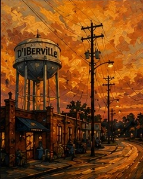
South Mississippi inspired
Original artwork
Twelve original pieces inspired by South Mississippi's marshes, working waterfront, live music, old oaks and coastal streets.
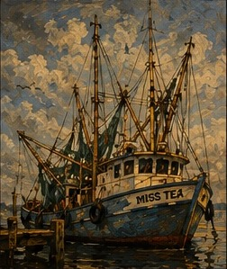
Working the Coast
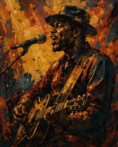
Blues on the Bayou
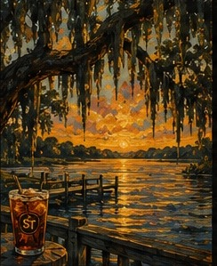
Edge of the Bay
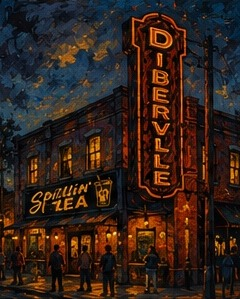
Main Street Glow
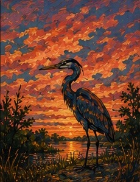
Saltwater Stillness
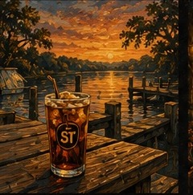
Tea on the Dock
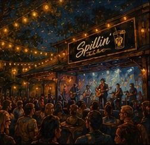
Good Friends & Live Music
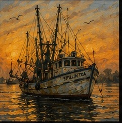
First Light Out
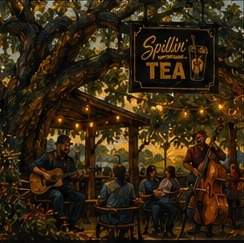
Oaks & Old Songs
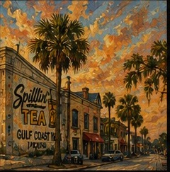
Gulf Coast Vibes
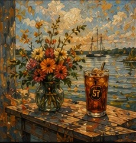